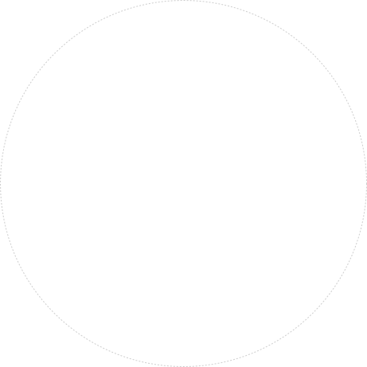
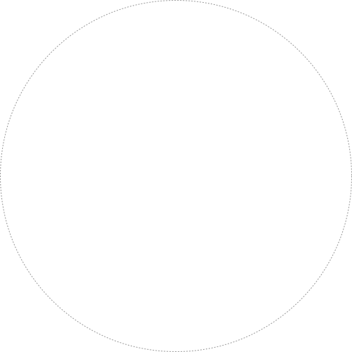
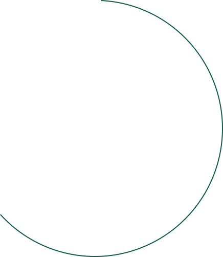
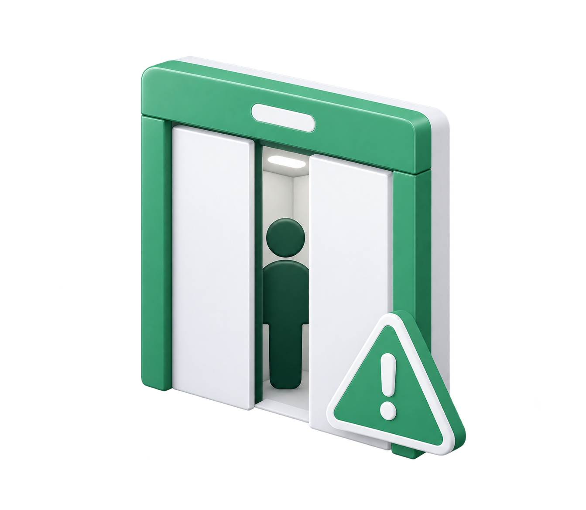
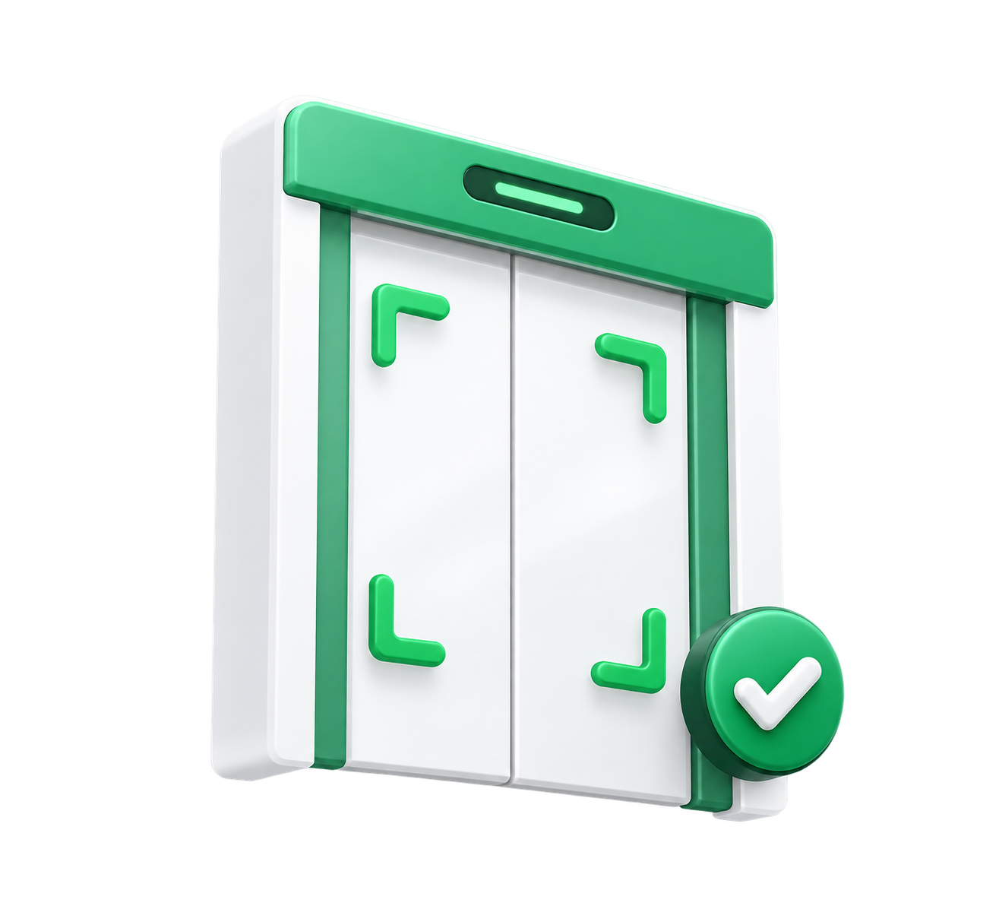

원격 모니터링
실시간 운행 상태 및 고장 감시

유지보수 업체의 역량[기술력]+마인드[성실성]에
따라 엘리베이터의 서비스 품질이나 부품의
내구연한[제품 사용기간]이 크게 달라질 수 있습니다.



고객만족센터 운용 절차
실시간 운행 상태 및 고장 감시

수집된 운행 정보의 분석을 통한
부품 수명 관리 및 고장 예보

영상감시를 동반한 실시간
상태감시로 안전한 원격 제어(선택 사항)
고객전용 모니터링 앱, A/S요원 전용 모니터링 앱
24시간 고객 만족 관리 센터 운용
고객만족센터 운용 절차

PROBLEM

DETECTION
RESPONSE